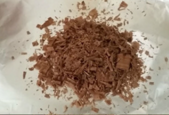
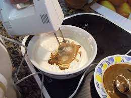
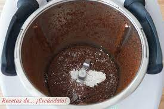
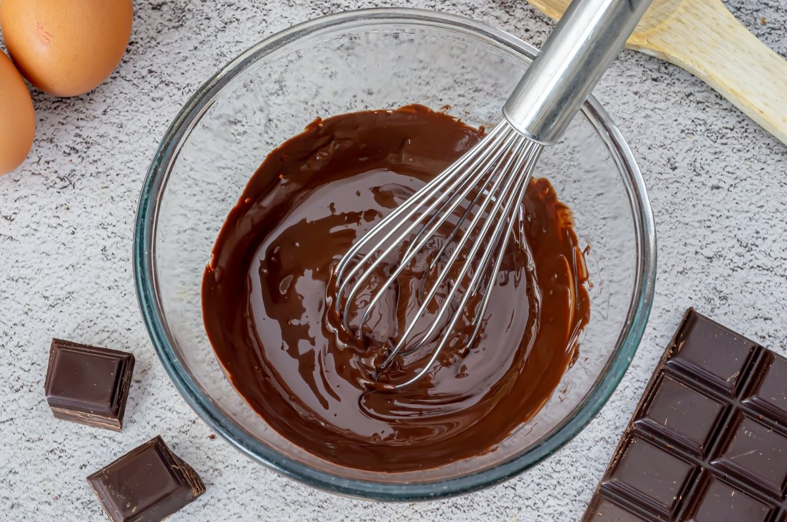

Como preparar paso a paso un Helado

Ingredientes
- 250g de chocolate negro (mínimo 70 % de cacao).
- Café soluble cucharada (opcional, puede ser descafeinado).
- 500ml de leche.
- 100g de azúcar.
- 4 yemas de huevo.
- 40g de clara de huevo pasturizada
Pasos
- ¡Empezamos la receta del helado casero! Empezamos rallando 50 g de chocolate con la ayuda de un pelador de verduras o un cuchillo.

- Las envolvemos en papel de aluminio y guardamos en el congelador.
- Rallamos el chocolate y el café soluble con un procesador de alimentos.

- Si lo hacemos con la Thermomix rallamos 8 seg/vel 8.

- En un cazo ponemos la leche, el azúcar, las yemas y la mezcla de chocolate y café.

- Con la Thermomix 5 min/60ºC/vel 5. Dejamos que baje un poco la temperatura y vertemos la mezcla en bandejas de cubitos de hielo.
- Las dejamos en el congelador como mínimo 4 horas. Justo antes de servir, batimos el helado en cubitos con las claras pasteurizadas. Seguidamente, en la Thermomix batimos 40 seg/vel 5´5. Vertemos en copas de helado y servimos con las virutas de chocolate.